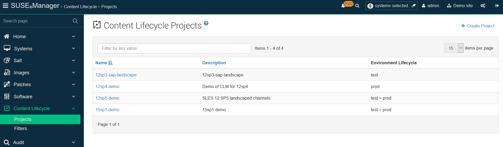
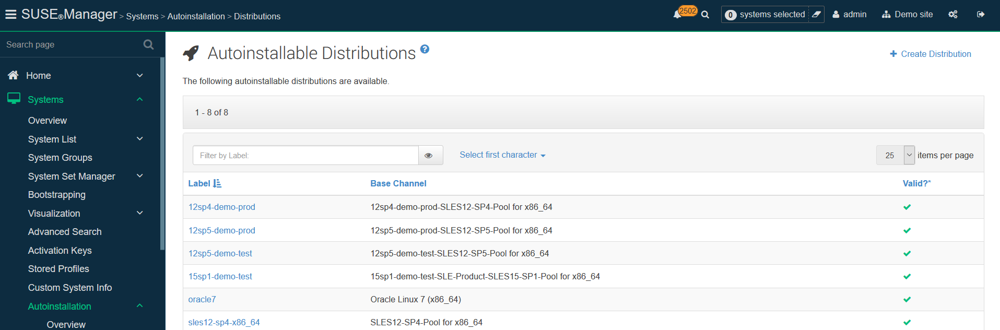
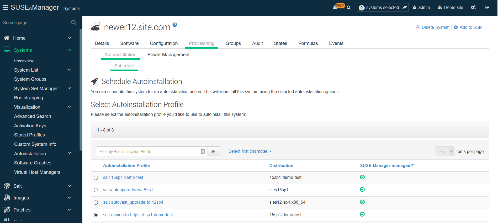
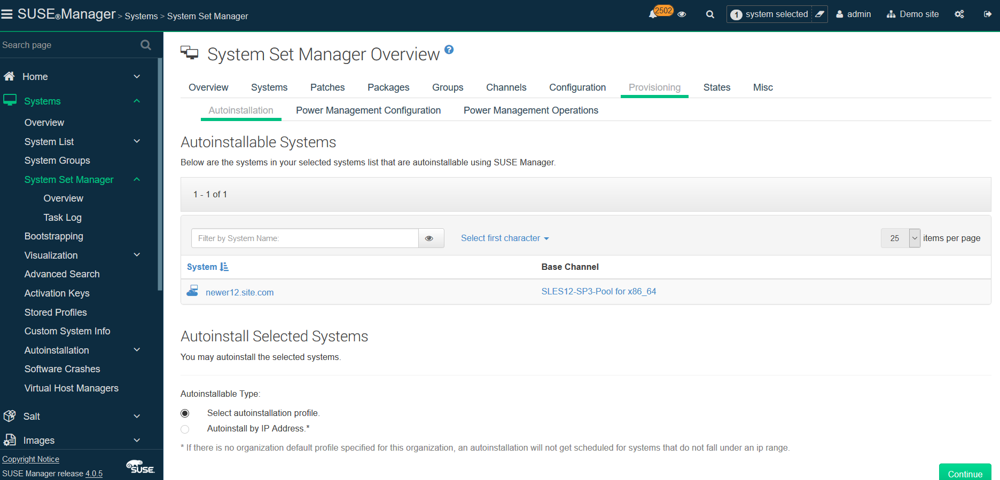

In-place upgrade of SUSE Linux Enterprise Server with Uyuni
This workflow shows how to automatically complete the task of in-place SUSE Linux Enterprise Server instances upgrade with Uyuni Server.
The workflow is applicable for both Salt and Traditional clients.
1. Use case
In-place migration is benefitial when:
-
migrating large number of the older SUSE Linux Enterprise Server is time-consuming
-
you are looking for a way to automate migrations
2. Outcome
Successful completion of this workflow results in consistent, supportable outcomes.
3. Step-by-step preparation instructions
|
This workflow is complex and time-consuming. Make sure that adequate testing is done before deploying the procedure in live environment. |
-
Create a Uyuni Content Lifecycle Management project for your distribution. Choose a short-but-descriptive prefix in the name, including all source channel modules. Add Filters as needed. Add at least one Environment.
 -
Create an Activation Key that includes the filtered project channels.
-
(Optional) Create a bootstrap script. The profile will not need it, because it is managed in the AutoYaST.
-
Create a
/var/spacewalk/isodirectory, and for SLES 15 SP2 and following, copy theFull iso(>10 GB) there. Create a mount point for it, such as/opt/install/15sp3and mount the ISO there. Ensure this path gets re-mounted at boot time. -
Create an Autoinstallation Distribution in Uyuni for each base channel to which you will migrate.
-
In the
Distribution, reference the specific Base Channel to match the base to which you might migrate, for example the base channel of your CLM project Environment Lifecycle. -
Label
the Distributionsomething that references your specific Base Channel. -
Set the
Installer Generationto match your specific version of SUSE Linux Enterprise Server (12, 15, etc.). -
The kernel options will be automatically populated when you click
Create Autoinstallable Distribution.
-
-
You may create more
Distributionsdepending on the Base Channel you need to assign, and you can re-use the sameTree Pathfor the boot media if required. -
Click on
Profiles, and upload Kickstart/Autoyast file for each target SUSE Linux Enterprise Server distribution, service pack and channels you wish to migrate to.-
This profile will be associated with the activation key and autoinstallation distribution created above.
-
Cut-and-paste a
Profiletemplate as the basis for what you upload, assign it theAutoinstall treeyou created as aDistributionabove. -
Do not put anything in the
Virtualizaton Typebox, and click Create.
-
-
Once created, your profile will now have some new fields on this
Detailspage. In theKernel Optionsline on thisDetailspage, put inautoupgrade=1 insecure=1 useonlinerepo
-
This will tell your profile to treat its install as an upgrade, and allow http access to the Uyuni Server to obtain installer updates without needing to go to SUSE Customer Center.
-
Click the variables tab in your Autoinstallation Profile to specify CLM prefix, Activation Key, Distribution tree, and Organization:
Sample Variables:
-
registration_key=1-15sp1-demo-test -
org=1 -
channel_prefix=15sp1-demo-test -
distrotree=15sp1-demo-test
-
Edit the AutoYaST profile itself in a tool where you can use cut-and-paste for the channels in your profile. Use variables in your profiles where possible.
Published profiles can be used as a starting point.
|
For profile files, see https://github.com/SUSE/manager-build-profiles. |
The profiles follow AutoYaST XML guidelines, and for an in-place upgrade there are several important sections:
- Add-ons - the repositories used in the upgrade
<listentry> <ask_on_error config:type="boolean">true</ask_on_error> #if $channel_prefix != "" <media_url>https://$redhat_management_server/ks/dist/child/$channel_prefix-sle-manager-tools15-pool-$arch-sp3/$distrotree</media_url> #else <media_url>https://$redhat_management_server/ks/dist/child/sle-manager-tools15-pool-$arch-sp3/$distrotree</media_url> #end if <name>$channel_prefix SLE-15-Manager-Tools Pool</name> <product>sle-manager-tools</product> </listentry>
Be sure to include all (and only) the relevant modules (both Pool and Updates) to be used in the migration. In migration, it is recommended to add all available modules, as the location of certain packages changes with new major versions.
After finishing the preparation, proceed with the actual migration depending on the type of your client.
For Salt clients, go to Migration of Salt clients.
For Traditional clients, go to Migration of Traditional clients.
4. Migration of Salt clients
Procedure: Migrating Salt clients
-
Prior to migration, be sure to check
Software → Non-Compliant. This will show any orphaned packages on your system - those Uyuni does not find in any assigned channel. Make sure this list is very small or empty, and that you can account for all the packages there. Delete any that are unnecessary. -
Before provisioning, issue the following Remote Command to the systems you wish to upgrade to remove the existing Uyuni channels during the upgrade process:
rm -rf /etc/zypp/repos.d/susemanager*
-
Assign your Autoinstallation Profile in
System Details → Provisioningfor one system, or in theProvisioningtab in SSM for as many systems as you need. Uyuni provisioning then auto-assigns a Reactivation Key to this system, that is referenced in the provisioning process. If you need to perform the upgrade through a particular Uyuni Proxy you will need to group just those systems together in SSM.
Uyuni creates the proper entry in /etc/grub.d/ for the reinstallation, and boots the selected systems to that entry.
The Profile you created above will be used to drive automated upgrade, following which your system will use the reactivation key (one time), associating the upgraded system with the previous Uyuni profile.
The Session Status screen in Uyuni will not be updated real-time for Salt clients. Instead, watch the target system console to track progress. If you are updating an instance on a hyperscaler like AWS you may be able to get screenshots of the console.
If your profile is clean, it should complete an in-place migration in about 30 minutes - depending on the speed of your network, client, and the number of required packages in the migration.
5. Migration of Traditional clients
Procedure: Migrating Traditional clients
-
Assign your Autoinstallation Profile in
System Details → Provisioningfor one system, or in theProvisioningtab inSSMfor as many systems as you need. If your system is able to use PXE, it can be completely automated from here. -
If your system is not able to use PXE, you can create an ISO to install with cobbler commands using the SUSE Manager server CLI. Copy the ISO file output to the machine you wish to migrate and boot from it. View all the profiles with this:
cobbler profile list
-
Output will look something like:
15sp1-demo-test:1:Demosite
-
Then build the ISO file with this command:
cobbler buildiso --iso=/tmp/15sp1-demo-test.iso --profiles=15sp1-demo-test:1:Demosite
The
--iso=section is the output of thebuildisocommand, and needs full path. -
Copy this ISO to the virtualization environment where your system can use it as boot media.